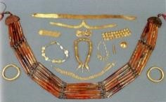
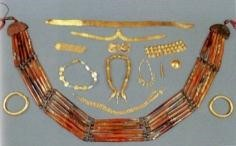

IN-HOPPE workshop
household-structured population dynamics
Presenting the first component for a model of
Indus Civilisation settlements in Haryana, NW India
Andreas Angourakis,
Jennifer Bates,
Jean-Phillipe Baudouin,
Alena Giesche,
Joanna Walker,
M. Cemre Ustunkaya,
Nathan Wright,
Ravindra N. Singh and
Cameron A. Petrie
https://andros-spica.github.io/IN-HOPPE-Angourakis-et-al-2019/index.html?print-pdf (printable version)
1. The context: The Indus Civilisation
- One of the great ‘Old World’ Bronze Age civilisations
- First cities in South Asia ('Mature Harappan', c.2500-1900 BC)
- Five (or four) known major urban centres
- ... and a multitude of smaller settlements


 

Although some seem to have it clear...


Long distance exchange
T. Wilkinson 2012, R. Law 2010


summer rain, winter rain

“Predictable unpredictability”
Precipitation and water stress
A point of comparison...South France (2007)
Hissar, Haryana, NW India (1995)
Input data obtained at: NASA POWER
Climate change

- Urban phase
(MH, 4.5 and 4.3 ka)
→ stronger winter precipitation - End of urban phase
(MH-LH, 4.1 ka)
→ decrease in both the summer and winter precipitation

{kind=link}
Food production
- Main crops:
- barley/wheat (winter)
- millet/rice (summer)
- Pulses
- Other
Bates, Petrie & Singh 2018, Archaeol Anthropol Sci

Food production


- Animal husbandry:
zebu, water buffalo, sheep, goat, pigs (?) - Fishing, hunting
- Role of herding?
2. The Indus Village model
End-goal
to explore human adaptation to the diverse landscapes of NW India and expose the sustainability of different types of food production regimes, mainly in terms of cropping strategies, in front of abrupt climate changeRationale
- rural settlement(s)
- local scale (max. 25 km²)
- food production/consumption
- Explore parameters (sensitivity analysis)
- Explore scenarios
(procedural generation, alternative designs) - Questions:
- Does diversity favours adaptation?
- Is it detrimental to generating surplus and therefore maintaining urban populations?
Entities
- Household: propinquity and co-residence, rather than kinship
- Group: set of households, united by kinship or alliance; one or more may form a 'settlement'
- Patches: 1 hectare, vary in soil, water balance, and land use
Model design, insofar
Household Demography
Household Structure

Are household agents better than individual agents?
Useful while processes at individual level are fewer than those at household level.
Household-based models are simpler...
... only if some information on individuals is lost.
e.g. Who are orange's parents?
Submodels
- Age/sex-specific submodels: mortality (Coale-Demeny, from demogR package), nuptiality and fertility (Peristeva & Kostaki 2007, 2015)
- Time step: year
Number of parameters: 2 + 8 + 4 = 14 (but with symmetry)
Marriage
- residence rule: matrilocal-matrilineal/patrilocal-patrilineal
- kinship tabu: lineages are tracked according to residence rule and tested for kinship degree when forming new couples.
- max. couples: households accept a specific, fixed number of couples; beyond this number, it will force new couples to form new households.
- open system: population exchanges individuals with hypothetical exterior households when there is no local candidates
Orphans
- maturity age: the minimum age acceptable for individuals to keep a household without older individuals (defaults to 15).
- Children are only considered orphans when the last adult of their households dies (not strictly their parents).
- Orphans are relocated randomly (for now?) among existing households while their former households are dissolved (adopted)

Dynamics
- Potential for a variety of behaviours:
- (local) extinction
- chaotic oscillation
- wave growth
- exponential growth
- Sensitivity to population size (extinction bottlenecks visible with lineages)
- (Ongoing) full sensitivity analysis


A glimpse at the rest of the Indus Village model
Weather model

Crop model (+ Weather, Soil Water Balance)

Based on SIMPLE crop model (Zhao et al. 2019)
Land model (procedural terrain generator)

Household economy
From land use to diet
- Food production at household-level
- Specific strategies applied to patches with specific (changing) conditions
- Diet and nutrition
- Sharing/exchange to be realised at group-level
Household economy
Main cycle
Data input
Soils and crop conditions
Foodstuff nutrition values
Conclusions
- Balance between simplistic and complicated designs (KISS?)
- There are many models "out there" (replicability)
- Importance of the cycle design-document-refactor
'TwoRains' project
ERC, 2015-2020
Follow our updates!
Acknowledgements
Thanks to the Land, Water and Settlement and TwoRains teams:
Aftab Alam, Alessandro Ceccarelli, Sagorika Chakraborty,
Sudarshan Chakradhari, Arti Chowdhary, Yama Dixit, Charly French, Adam Green,
Henry Green, Lily Green, David Hodell, Penny Jones, Carla Lancelotti, Emma Lightfoot, Frank Lynam,
Sayantani Neogi, Hector Orengo, Arun Kumar Pandey, Danika Parikh, Vikas Pawar, Amit Ranjan,
David Redhouse, Dheerendra Pratab Singh, & Akshyeta Suryanarayan.
Special thanks also to the Department of AIHC and Archaeology, BHU, the European Research Council (ERC),
and the UK-India Education and Research Initiative (UKIERI) for support and funding, and to the Archaeological
Survey of India for permission to carry out the work.
household-structured population dynamics
Presenting the first component for a model of
Indus Civilisation settlements in Haryana, NW India
Andreas Angourakis,
Jennifer Bates,
Jean-Phillipe Baudouin,
Alena Giesche,
Joanna Walker,
M. Cemre Ustunkaya,
Nathan Wright,
Ravindra N. Singh and
Cameron A. Petrie
https://andros-spica.github.io/IN-HOPPE-Angourakis-et-al-2019/index.html?print-pdf (printable version)